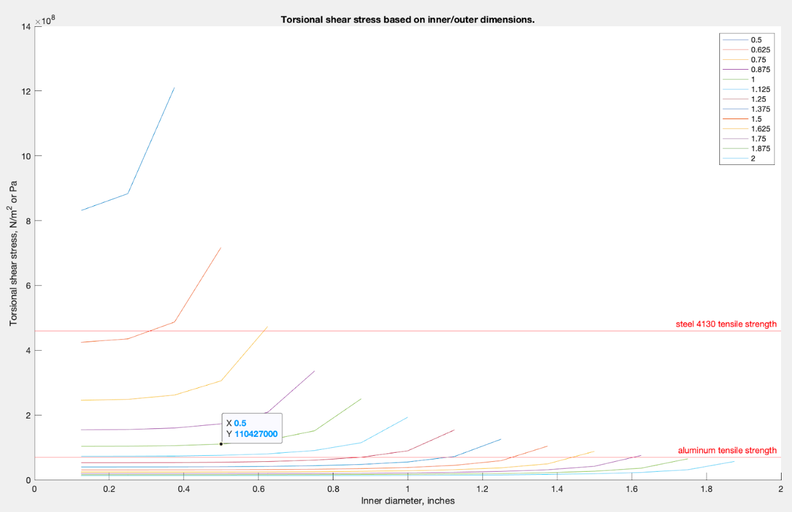

Baja Drivetrain
Baja SAE is an off-road vehicle racing competition. My collegiate team designs, fabricates, and assembles the car.
Prop Shaft Sizing
Goal:
Find a prop shaft size that isn’t too heavy and can sustain torsional shear stresses with a safety factor of 2. This prop shaft will be used to connect the front and rear differentials to support 4WD.
Assumptions:
- The prop shaft is a 36 inch long hollow cylinder
- 333.1014 N*m of torque is coming from the gearbox (100% efficiency)
Process:
1. Calculate and sweep the torsional shear stresses for possible inner/outer diameters of the prop shaft
2. Plot tensile strength of various materials
3. Choose a prop shaft that is at least halfway below the tensile strength line
4. Verify that the weight of the shaft isn’t too much
5. Perform FEA on the chosen shaft size to check how much stress it experiences after many accelerations

Each line represents one outer diameter (ranging from 0.5 - 2 inches), and it sweeps across the possible inner diameters (starting from 0.25 inches).
The two horizontal lines represent the tensile strengths of Steel 4130 and Aluminum. All points below a line shouldn't fail if made with that material. Because the desired factor of safety is 2, whatever point we choose should fall at least halfway below the material's tensile strength line.
Decision:
Material: Steel 4130 (Chromoly)
- Strong, and is suitable for welding if needed
- Tensile strength: 460,000,000 N/m^2
Size: 1 inch diameter with 0.5 inch hole
Weight: 6.014 lbs (not too heavy, which is good)
FEA:
The modeling focused on just one event of torque being applied. In reality, many torques will be applied to the prop shaft over time. Fatigue analysis helped determine if the shaft would fail.
The analysis, which applied constant amplitude, cyclical forces, showed that the prop shaft was still under minimal stress after 1 million cycles. This verified that the chosen prop shaft size and material was a safe selection.